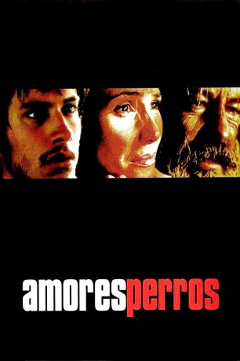

#1374 Amores perros
Alternativ: Amores Perros (Englischer Titel)
Auszeichnungen: für 1 Oscars nominiert 1 BAFTA-Awards gewonnen
 
 IMDB-Wertung: 8.1 / 10
IMDB-Wertung: 8.1 / 10  IMDB-TOP-Platzierung: 214
IMDB-TOP-Platzierung: 214  Metascore: 83
Metascore: 83 
Mexico City: Bei einem tagtäglichen Autounfall treffen die unterschiedlichsten Individuen aufeinander. Alle sind auf der Suche nach dem Glück. Da ist das Topmodel Valeria, die den Verleger Daniel dazu bringt seine Familie zu verlassen. Dann ist da der arbeitslose Octavio, der mit Hundekämpfen an Geld kommen will um mit seiner Schwägerin durchzubrennen. Außerdem ist da noch Ex-Professor El Chivo, der als Auftragskiller durch die Stadt zieht...
Jahr: 2000
Dauer: 154 Minuten
FSK: 16
Land: Mexiko Studio: X Verleih AGTonspuren: DD5.1 - ,
Untertitel:
Auflösung: 1080p (1920x1080) Größe: 10547 MB
Genre: Drama, Thriller
Regisseur: Alejandro G. Iñárritu
Drehbuch: Guillermo Arriaga
Soundtrack: Gustavo Santaolalla
Darsteller:
 Emilio Echevarría als El Chivo
Emilio Echevarría als El Chivo Gael García Bernal als Octavio
Gael García Bernal als Octavio- Goya Toledo als Valeria
- Vanessa Bauche als Susana
- Jorge Salinas als Luis
- Marco Pérez als Ramiro
- Rodrigo Murray als Gustavo
- Humberto Busto als Jorge
- Rosa María Bianchi als Tía Luisa, Aunt Luisa
 Adriana Barraza als Mama Octavio, Octavio's Mother
Adriana Barraza als Mama Octavio, Octavio's Mother- José Sefami als Leonardo
- Ricardo Dalmacci als Andrés Salgado
 Gustavo Sánchez Parra als Jarocho
Gustavo Sánchez Parra als Jarocho- Roberto Medina als Conductor de T.V., TV Announcer
- Álvaro Guerrero als Daniel
- Gerardo Campbell als Mauricio
- Dunia Saldívar als Mama Susana, Susana's Mother
- Lourdes Echevarría als Maru
- Laura Almela als Julieta
- Dagoberto Gama als Alvaro
- Gustavo Muñoz als El Chispas
- Carlo Bernal als Javier
- Rodrigo Ostap als El Jaibo
- Edgar González als Bebe Rodrigo, Baby Rodrigo
- Hilda González als Cajera, Cashier
- Patricio Castillo als Doctor
- Ana María González als Enfermera, Nurse
- Ángeles Marín als Conductora de T.V., TV Announcer
- Carlos Samperio als Hombre deshuesadero, Man at Junkyard
- Kazuyo Togawa als Sra. gorda, Fat Lady
- Gema Aparicio als Empleada domestica, Maid , scenes deleted
- Adriana Varone als Amante Luis, Luis's Mistress
- Bruno Salgado als Champignon
- Adriana Islas als Lina
- Regina Abad als Jimena
- Leoncio Torres als El Pelón
- Luisa Geliz als Secretaria Daniel, Daniel's Secretary
- Jean Paul Bierry als Hombre junta, Man at Meeting
- Alma Rocío González als Mujer junta, Woman at Meeting
- Mauricio Martínez als Judicial, Judicial Police Agent
- Juan Manuel Ramos als Policia, Policeman
- Ernesto Bog als Hombre 1, Man 1
- José Luis Barraza als Hombre 2, Man 2
- Jorge Arellano als Niño cuidador 1, Boy Caretaker 1
- Jonathan Herrera als Niño cuidador 2, Boy Caretaker 2
- Heriberto Castillo als Extraño, Stranger
Datei: X:\2000\Amores perros (2000, FSK16, 1920x1080).mkv seit 30.06.2015
Festplatte: HD 1996-2002
 Es gibt insgesamt 82 Filme in der Gruppe '2000'
Es gibt insgesamt 82 Filme in der Gruppe '2000'